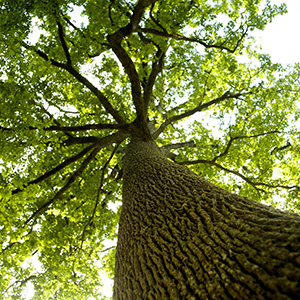

Protect Your Property This Spring with Expert Tree Service in Ocean County
This past winter was mild by New Jersey standards, and while it may have been a welcome break from heavy snow and ice, it could spell hidden trouble for your trees. Many homeowners assume that if their trees made it through winter without obvious damage, they’re in the clear for spring. Unfortunately, that’s not always the case. If you want to protect your home, your landscape, and your investment, now is the perfect time to schedule professional tree service in Ocean County with a team you trust.
Why a Mild Winter Puts Trees at Risk
Trees depend on the natural cycle of seasons. Freezing temperatures and dormancy periods give them a chance to rest and prepare for healthy spring growth. When winter is unusually warm, that natural cycle gets disrupted.
Here are a few issues that can quietly develop during a mild winter:
- Insect Infestation: Warmer temperatures allow pests like borers and beetles to survive and spread earlier than usual. Without a deep freeze to naturally control populations, these insects can cause serious damage to tree trunks and limbs before homeowners even notice.
- Fungal Growth: Moist, mild conditions create the perfect environment for fungal diseases to take hold undetected. Root rot, cankers, and other fungal infections can weaken trees internally, leaving them vulnerable to breakage.
- Structural Weakness: Snow and ice often expose weak limbs by breaking them. Without the weight and stress of a harsh winter, cracks, splits, and hollow branches can go unnoticed until a spring storm causes them to fall.
- Premature Budding: Some trees may start budding too early, responding to unseasonably warm weather. If a sudden late-season freeze occurs, that new growth can be killed off, putting tremendous stress on the tree’s energy reserves.
Even if your trees appear healthy at first glance, these hidden issues can escalate quickly.
Why Spring Tree Service in Ocean County Matters

Scheduling a spring evaluation with a trusted provider of tree service in Ocean County can catch small issues before they become big, expensive problems.A professional arborist will first and foremost inspect trees thoroughly. Certified experts know what signs to look for, from hairline cracks to early pest infestations. Secondly, professionals will identify hazardous limbs via that inspection as well. Weak, dead, or diseased branches are a major threat once spring storms roll in. Furthermore, whether it’s trimming, cabling, pest control, or even soil treatments, early action protects both the tree and your property and professionals can take these actions. Lastly, experienced arborists prioritize tree preservation. At Ben Bivins Tree Experts, we focus on maintaining tree health whenever possible, not rushing to removal unless absolutely necessary.
Many problems spotted early can be resolved with proactive treatments like selective pruning, fertilization, or cabling support systems. Catching these issues before they worsen can save you thousands of dollars — and possibly save mature, valuable trees on your property.
The Value of Preventative Tree Service
Think of professional tree service in Ocean County as part of your home’s regular spring maintenance, just like checking your roof or cleaning gutters. Healthy trees provide enormous value to your property in many ways. Well-maintained trees offer significant shade that can reduce cooling costs during the summer months by protecting your home and outdoor spaces from direct sunlight. In addition to energy savings, mature, healthy trees can add substantial resale value to your property, making them a true investment rather than just part of your landscaping.
Safety is another critical benefit. Preventative care, including regular inspections and strategic pruning, helps prevent falling limbs and failing trees that could otherwise cause damage to your home, vehicles, or even injure family members. Beyond personal benefits, thriving trees also play an important environmental role. They clean the air, provide habitats for local wildlife, and help manage stormwater runoff, improving your property’s overall ecosystem.
Neglecting tree care, especially after an unusual winter season, invites unnecessary risks. What could have been handled with simple maintenance in the spring can turn into a costly removal later if issues are left unresolved. Investing in proactive tree service now protects not only the trees themselves but the overall beauty, safety, and value of your home for years to come.
Call Ben Bivins Tree Experts for Tree Service in Ocean County
At Ben Bivins Tree Experts, we specialize in keeping Ocean County trees healthy, strong, and safe. Whether you need a thorough inspection, emergency limb removal, or preventative maintenance, our team is ready to help.
Our certified professionals have years of experience evaluating and maintaining a wide variety of trees common to Ocean County, from towering oaks and maples to decorative ornamentals.
When you work with Ben Bivins Tree Experts, you’ll get:
- Clear, honest evaluations
- Customized care plans
- Competitive pricing
- Fast, reliable service
We believe that tree care isn’t just about removing problems — it’s about protecting the beauty, value, and safety of your property for years to come. Don’t wait for spring storms to reveal hidden dangers. Schedule your tree service in Ocean County today and enjoy peace of mind all season long. Contact us now to book your spring inspection with Ben Bivins Tree Experts!